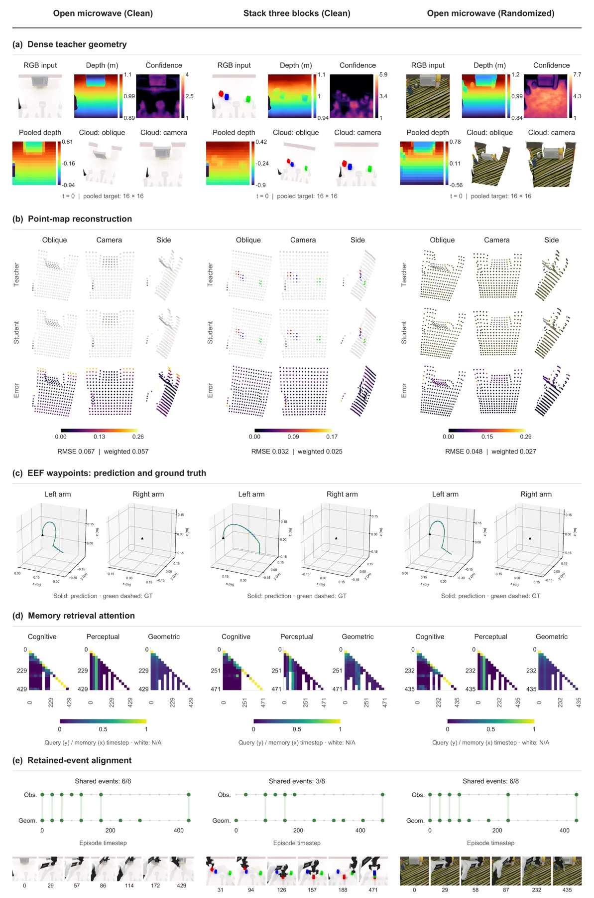
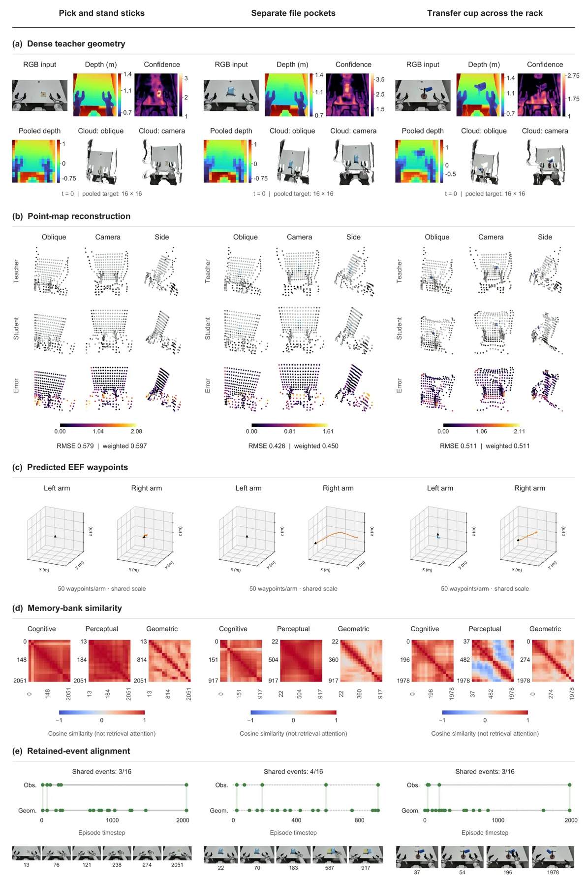
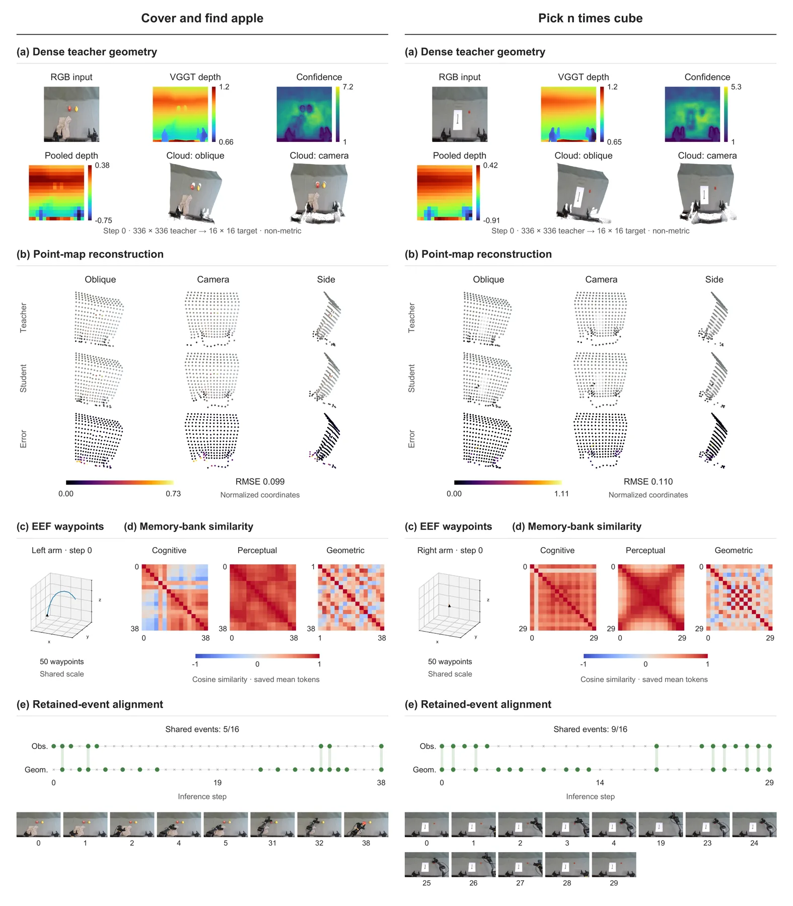
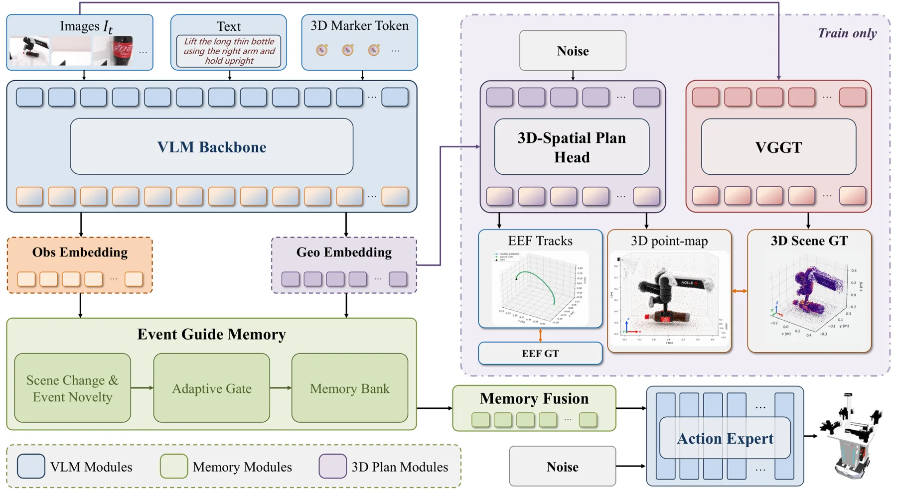
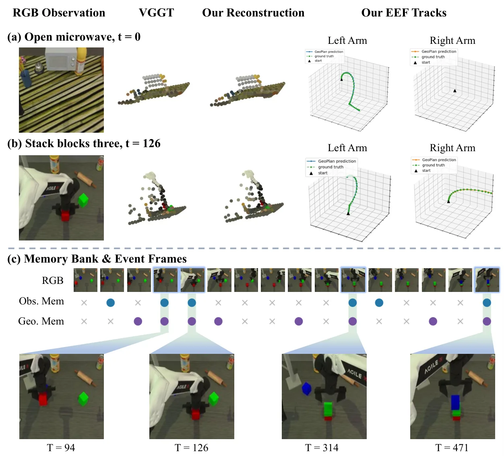

GeoMem-VLA：把 3D 几何内化为可记忆的 token，而不是每步重建场景
GeoMem-VLA: Internalizing 3D Scene Understanding into Temporal Memory for Vision-Language-Action Models
把 VGGT 的点图与演示得到的未来末端轨迹当作监督信号，蒸进 K 个可学的 GeoPlan token；token 与两条观测流一起进入带容量上限的情节记忆，靠相似相邻合并保留事件帧。推理时教师、重建头全部移除，只做记忆检索与门控融合，因此在遮挡后仍能靠历史几何定位目标。LIBERO 98.9%、RoboTwin 91.17% 平均，真机五任务 78.0%；去掉几何分支 LIBERO 掉到 97.9、RoboTwin 掉到 89.71。
作者、单位与技术谱系 · Research context
作者与单位
研究脉络
- VGGT（Wang et al., CVPR 2025）方法基座关系：前馈几何模型，一次前向给出相机参数、深度、点图与点轨迹；本文把它冻结成 teacher，用点图做伪标签而不引入其推理开销。[VGGT 论文]
- Spatial Forcing（Li et al., ICLR 2026）上游方法（点级对齐）关系：把 VGGT 特征点级对齐到 VLA 中间层；本文的判断是“直接对齐 VLM 原生视觉嵌入”会让几何与语义互相牵制，因此改为独立的 GeoPlan token 承载几何。[Spatial Forcing 论文]
- GeoPredict（Qian et al., CVPR 2026）上游方法（预测式几何）关系：用未来机器人关键点轨迹加预测高斯几何来监督 VLA；本文保留“未来轨迹”这一监督信号，但去掉高斯重建，把轨迹与点图一起压进 token。[GeoPredict 论文]
- MemoryVLA（Shi et al., ICLR 2026）记忆范式来源关系：检索、自适应融合、相似度合并三件套构成其感知-认知记忆；本文沿用这套更新规则，并额外开一条几何流、把合并对象换成几何 token。[论文 §2/§3.3]
合作网络
- Qinfan ZhangX-Humanoid → 北京航空航天大学关系：双单位署名[arXiv v1 TeX 作者块]
- Yifan LuoX-Humanoid → 中国人民大学关系：双单位署名[arXiv v1 TeX 作者块]
- Haoyuan Shi / Guanlin Liu / Haozhe ShanX-Humanoid → USTC／CUHK(SZ)／FDU关系：双单位署名[arXiv v1 TeX 作者块]
- GeoMem-VLA 官方仓库X-Humanoid 项目组 → github.com/GeoMem-VLA/GeoMem-VLA关系：官方代码与模型发布[论文首页链接与仓库]
作者、单位与角色全部取自 arXiv v1 TeX 作者块及脚注（已核对 e-print），属论文事实；采集器元数据缺少通讯作者 Xiaozhu Ju、并把 Xiancong Ren 拼成 Xiangcong Ren，本页以原文为准。MemoryVLA 的第一作者署名为 Hao Shi，与本篇 Haoyuan Shi 字形相近但证据不足，不作同一人认定；除共同署名、官方仓库与论文引用外，不推断导师、师生或实验室隶属关系。
方法本质拆解 · What actually changed
是不是微调？
不是从零训练，也不是纯测试时算法。视觉语言骨干是预训练的 Qwen3-VL-4B，动作专家沿用 StarVLA 的 GR00T 式 flow-matching 结构，VGGT 从头到尾冻结、只提供监督目标；真正被更新的是新加的 GeoPlan marker embedding、投影头、辅助几何头与动作专家。训练步数按下游分别设置：LIBERO 300k、RoboTwin 200k、两个真机平台各 20k，batch 与梯度累积也随平台不同（附录 A 表 5）。
有没有额外约束？
输入侧只增加了 K 个可学 token，不需要深度图、点云或额外传感器；约束全部加在训练目标上：当前场景点图（VGGT 伪标签、按置信度加权）与未来 EEF 轨迹被拼成一个整体做 flow matching，scene 与 EEF 两段权重为 0.5 / 3.0，总损失为动作损失加 alpha 倍几何损失。记忆侧还有两条硬约束：容量上限（16 或 8）与“只合并最相似的相邻时间戳对”的写回规则，这两条决定了历史能保留多长、哪些状态会被压掉。
推理/后端到底做了什么？
推理链路就是原 VLM 加动作专家：教师、几何重建头、投影头全部移除，不做逐帧重建、不做全局优化、没有测试时迭代。唯一新增的运行时动作是记忆读写——用当前 token 检索历史几何与观测表征，经 cross-attention 和通道门控融合后再喂给动作专家，复杂度与记忆容量线性相关。换句话说，部署成本主要来自“多存了几个 token”，而不是“多跑了一个几何模型”。
方法本质是什么？
本质是把几何老师蒸馏成一个低维、可累积的状态量：点图给出“场景长什么样”，未来 EEF 轨迹给出“任务要往哪走”，两者共同约束同一组 token，使 token 同时编码结构与意图。随后用带时间戳的因果记忆把这组状态跨帧接起来，让遮挡后的决策还能检索到遮挡前的几何；门控融合决定当前观测与历史几何各占多少。它改变的是“策略可用的几何信息量与时间跨度”，而不是重建精度——论文也明确没有做完整 3D 重建。
输入多视角 RGB、语言与 K 个 GeoPlan token；训练期用冻结 VGGT 点图与演示 EEF 轨迹做 flow-matching 监督；推理期把这些 token 写入容量受限的因果记忆并检索融合，从而在不重建场景的前提下给动作专家提供持久的几何上下文。

结论与问题Conclusion & Motivation
核心结论
这篇论文的主张是：动作生成不需要“每步可渲染的 3D 重建”，而需要一份紧凑、任务相关、能随时间累积的几何摘要。作者把 VGGT 的点图监督压进 K 个 GeoPlan token，再把这些 token 放进带容量上限的情节记忆，推理时不调用教师、不做重建。结果是 LIBERO 平均 98.9%、RoboTwin 2.0 平均 91.17%、五项真机任务 78.0%，且在两个基准上都优于去掉几何或去掉记忆的匹配变体。
动机与问题
VLA 依赖当前帧的 2D 观测，一旦目标被遮挡（论文的“毛巾盖苹果”例子），当前观测里就没有可用的空间线索，任务必须靠历史。现有 3D-aware VLA 有两条路：加深度/点云输入（要额外传感器），或把整个表征同时逼向结构细节与控制信息；记忆增强策略则只保留感知与任务上下文，没有规定记忆里该存什么样的几何。作者把问题收敛为一句：几何监督应该塑形“空间记忆”，而不是塑形一个可渲染的重建。
方法Method
方法总览
骨干是 Qwen3-VL-4B，动作专家是 StarVLA 里的 GR00T 式 flow-matching Diffusion Transformer，输出长度 H 的动作块。在视觉-语言序列末尾追加 K 个可学 GeoPlan marker，取最后一层隐状态投影到几何工作维度 D_g，得到几何 token；这些 token 一方面条件一个辅助 flow-matching 头（预测当前场景点图与未来末端轨迹），另一方面写入几何记忆库。训练完把教师与重建头整体移除，部署时只有“检索历史 + 门控融合 + 动作专家”三步。
关键技术细节
监督目标把 P×P 池化后的 VGGT 点图与未来 EEF 轨迹拼成 Y_t=[P_t;W_t]；未来 EEF 位置先变换到当前 VGGT 点图坐标系，再与点图联合归一化，这样“要往哪走”就被表达成相对于当前场景的位置。几何损失按 scene / EEF 两段加权，权重分别是 0.5 与 3.0；总损失是动作 flow-matching 损失加 alpha 倍几何损失。记忆侧维护两条观测流和一条几何流：先用当前 token 查询历史（键上加可学时间戳编码），再写入当前项（stop-gradient），超容量时合并“最相似的相邻时间戳对”（逐元素均值、取较晚时间戳），从而在稳定阶段压缩冗余、在状态切换处保留独立槽位；记忆容量 LIBERO 为 16、RoboTwin 为 8。几何注入用 cross-attention 加通道门控，几何通路零初始化，训练初期门控偏向视觉 token。

实验Experiments
实验设置
仿真用 LIBERO（Spatial/Object/Goal/Long 四套件、每套 10 任务、每任务 50 trials、7 维 EEF delta、H=8）与 RoboTwin 2.0（50 个双臂任务、Clean 与 Randomized 各 100 trials、14 维 joint、H=50）。真机用 Astribot S1 与 AgileX Cobot Magic 2 两个双臂平台、三相机配置，五个任务各采 60 条演示、每任务 10 次独立闭环 rollout。对照包括 π0.5、OpenVLA-OFT、Spatial Forcing、3DThinkVLA、MemoryVLA、GeoVLA、AVA-VLA 等已发表结果，论文明确说明这些数字沿用各自的一手协议、只作 context。
实验数字与比较
LIBERO 平均 98.9%（Spatial 99.6 / Object 99.8 / Goal 99.6 / Long 96.6），第二位是 3DThinkVLA 的 98.7%，Spatial Forcing 98.5%，MemoryVLA 96.7%；在唯一还有区分度的 Long 套件上比 MemoryVLA 高 3.2 个点（96.6 对 93.4）。RoboTwin 2.0 为 Clean 91.10% / Randomized 91.24%（平均 91.17%），高于 HyVLA-0.5 的 90.90/90.10 与 StarVLA-GR00T 的 88.00/88.50。真机五项平均 78.0%：file pockets 100%、pick and stand sticks 90%、cover and find the apple 80%、transfer cup 70%；按均值反推第五项 pick n times cube 约为 50%（原文只给柱状图，见“局限与待核验”）。诊断实验里，辅助头重建点图的 RMSE 为 0.064–0.094（归一化坐标，4 个 case），未来 EEF 轨迹 RMSE 为 3.07–3.74 mm。
消融/失败边界
LIBERO 上去掉几何分支（保留记忆）平均从 98.9% 降到 97.9%，其中 Spatial 99.6→98.0、Long 96.6→95.2；去掉时间记忆（保留几何）降到 98.2%，Long 掉到 94.2%，其余套件只掉 0.2。RoboTwin 上去掉几何分支平均 91.17→89.71，去掉记忆→90.18，无任何对齐的 StarVLA-GR00T 为 88.25；完整模型在 50 个任务中分别有 35 个和 27 个优于这两个变体。失败边界很清楚：三个 LIBERO 套件已经接近天花板，真正的增益证据集中在 Long；几何分支的收益依赖 VGGT 点图质量，弱纹理、透明或强反光物体上没有评估；真机只有每任务 10 次 rollout，无法给出置信区间。
局限与迁移Limitations & Transfer
局限与待核验
作者没有单设局限章节，结论只强调“有效”，没有讨论失败案例。我们逐项核验后仍有缺口：GeoPlan 的 token 数 K、几何维度 D_g 与损失权重 alpha 在正文与附录 A 的超参表里都没有给出数值，附录还提示“checkpoint-specific settings must be verified”，意味着不同 checkpoint 可能不同。真机第五项数字只能由五项均值反推（约 50%），原文没有逐任务数值表；记忆合并在 episode 长度远超容量时的信息损失没有量化；此外没有报告训练期调用 VGGT 的开销（显存、时长），也没有与 Spatial Forcing / 3DThinkVLA 做同协议重训。
与你研究路线的关系
最可迁移的是“几何量只在训练期当老师、部署期零额外输入”这条结构：它把几何基础模型当成离线标注器，而不是在线模块，正好适合算力受限的融合系统。第二个可迁移点是记忆的“相似相邻合并”——用表征变化而不是固定时间窗决定保留哪些状态，这与子图/关键帧管理是同一个问题，可以直接替换你现有滑窗策略做 A/B。下一步建议做最小实验：在现有 VIO 前端旁挂一个低维几何 token（输入当前帧 + IMU 预积分增量），用离线 VGGT 点图监督，观察它能否在纹理退化或动态物体增多时提前给出尺度漂移信号。







